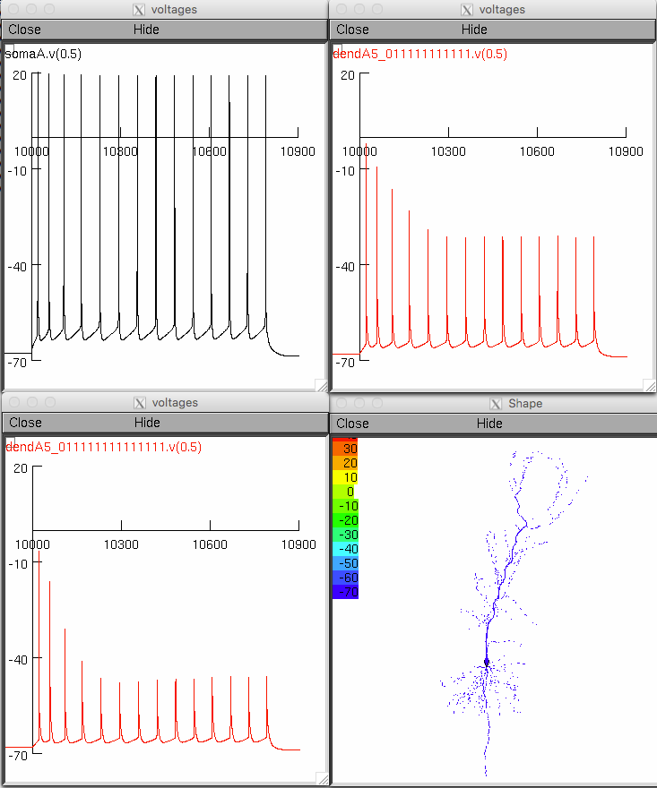
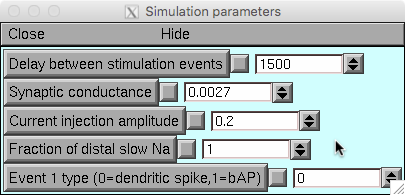
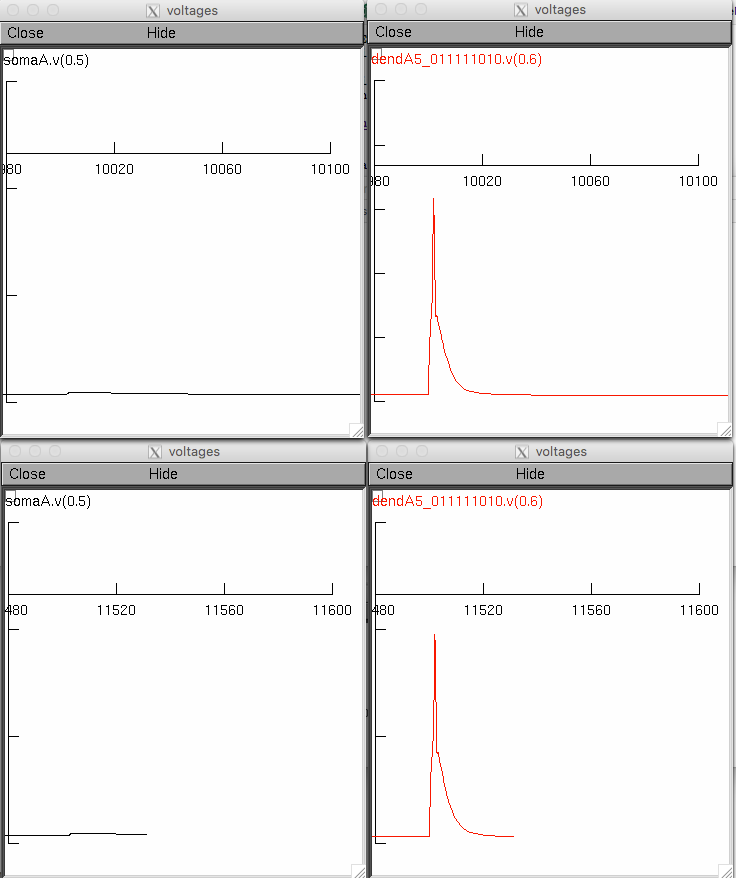

This folder contains files for NEURON simulations showing the effect
of prolonged inactivation of sodium channels.
There are two executable simulations in this folder. Either
auto-launch from ModelDB, or download and extract the archive, compile
the mod files and start by using nrngui with the mosinit.hoc file.
See https://senselab.med.yale.edu/ModelDB/NEURON_DwnldGuide.html
for more help if needed.
1. Activity-dependent backpropagation of a train of action potentials
(bAPs). (runs using file ri06_runAPtrain.hoc) This simulation shows
the response of the neuron to a sustained somatic current
injection. Voltage traces are plotted at the soma, at an intermediate
dendrite, and at a distal dendrite. The degree of attentuation of the
train of bAPs increases with distance from the soma. After you click
"Init & Run" you should see traces similar to those in Figure 4A in
the paper:

2. Suppression of dendritic spike generation by local
depolarization. (runs using file ri06_runsyn.hoc) This simulation
shows that prolonged inactivation of sodium channels induced by local
depolarization is sufficient to suppress the initiation of a local
dendritic spike. Local depolarization here can be generated either by
a prior dendritic spike (Event type = 0, in the simulation) or a bAP
(Event type = 1, in the simulation). Increasing the time between
local depolarization and the dendritic-spike generating stimulus
(Delay between stimulation events = 1500) allows the dendritic spike
to be generated. In addition, replacing all the prolonged-inactivating
sodium with fast-inactivating-only sodium conductance (Fraction of
distal slow Na = 0) also allows the dendritic spike to be generated in
both scenarios. This box allows you to experiment with these:

After you click "Init & Run" you should see traces, which with the default
parameters looks like

Below are descriptions of the remaining hoc files in this folder:
ri06.nrn: coordinates for the reconstructed neuron, including an
artificial axon
ri06_memb.hoc: contains all the membrane conductance parameters
ri06_graphAPtrain.hoc: contains graphs for the backpropagating action
potential train simulation (ri06_runAPtrain.hoc)
ri06_graphsyn.hoc: contains graphs for the dendritic spike suppression
simulation (ri06_runsyn.hoc)